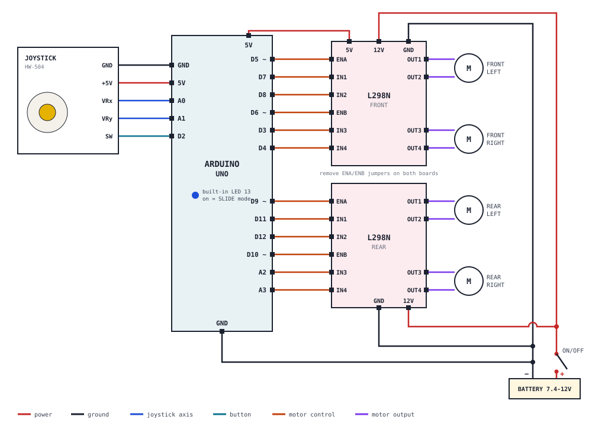

A wheelchair that slides sideways.
One joystick drives, turns and slides it, on four mecanum wheels.
Drive it yourself
Tap Space to start. Hold Space for one second while stopped to switch to Slide mode, then push the stick sideways.
Four wheels, pushing at 45°
Each mecanum wheel pushes partly forward and partly sideways. Spin the four in the right pattern and the sideways pushes add up while the turning cancels out.
| Mode | Joystick | Front L | Front R | Rear L | Rear R | Chair |
|---|---|---|---|---|---|---|
| Both | Up | + | + | + | + | Drives forward |
| Turn | Right | + | − | + | − | Turns right on the spot |
| Slide | Right | + | − | − | + | Slides right, no turning |
| Slide | Left | − | + | + | − | Slides left |
| Slide | Up and right | + | 0 | 0 | + | Diagonal, forward-right |
Mount front-left and rear-right as one wheel type, front-right and rear-left as the other. If sliding right moves the chair left, set INVERT_SIDE or swap the pairs.
Everything on one joystick
No extra buttons. The joystick’s own push button starts, stops and switches modes.
| Action | When | Result |
|---|---|---|
| Push the stick | Motors on | Drive, turn, or slide |
| Tap the button | Stopped | Motors on |
| Tap the button | Driving | Stops at once |
| Hold the button one second | Stopped | Switches Turn and Slide mode; built-in LED 13 is on in Slide mode |
The chair starts with the motors off, in Turn mode. The mode only changes while it is stopped, so it never switches mid-drive.
Build it
Breadboard and jumper wires, no soldering. Two L298N boards share one battery through a switch.
Materials
Match the battery to the motors: TT motors want a 2-cell pack with the Arduino on a USB power bank; 12 V motors want a 3-cell pack.
Wiring
VRx, VRy, SWA0, A1, D2ENA, IN1, IN2D5, D7, D8ENB, IN3, IN4D6, D3, D4ENA, IN1, IN2D9, D11, D12ENB, IN3, IN4D10, A2, A312Vswitch, batt +GNDjoinedTake the ENA and ENB jumper caps off both boards. The speed pins D5, D6, D9 and D10 are PWM pins.

The wheel mixing
int side = slideMode ? x : 0;
int turn = slideMode ? 0 : x * TURN_LIMIT / 100;
long w[4] = { fwd + side + turn, // front-left
fwd - side - turn, // front-right
fwd - side + turn, // rear-left
fwd + side - turn }; // rear-right
// scale all four together so the direction stays rightUpload it
- Open
joystick_wheelchair_4mecanum.inoin the Arduino IDE. - Pick
Arduino Unoand its port, then Verify and Upload. - Switch on with the joystick untouched, so it can find its centre.
- Test with the wheels off the ground before driving on the floor.
Compiles for the Arduino Uno with no warnings, using about 13% of its memory.